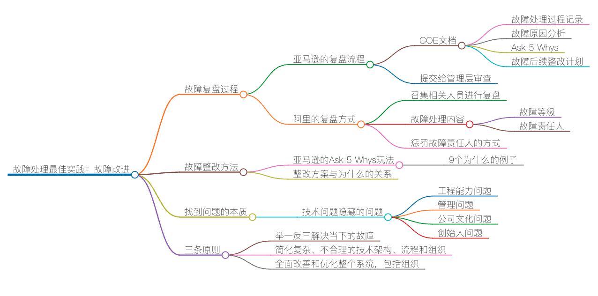

故障处理最佳实践：故障改进

在上节课中，我跟你分享了在故障发生时，我们该怎样做，以及在故障前该做些什么准备。只要做到我提到的那几点，你基本上就能游刃有余地处理好故障了。然而，在故障排除后，如何做故障复盘及整改优化则更为重要。在这篇文章中，我就跟你聊聊这几个方面的内容。
故障复盘过程
对于故障，复盘是一件非常重要的事情，因为我们的成长基本上就是从故障中总结各种经验教训，从而可以获得最大的提升。在亚马逊和阿里，面对故障的复盘有不一样的流程，虽然在内容上差不多，但细节上有很多不同。
亚马逊内部面对 S1 和 S2 的故障复盘，需要那个团队的经理写一个叫 COE（Correction of Errors）的文档。这个 COE 文档，基本上包括以下几方面的内容。
- 故障处理的整个过程。就像一个 log 一样，需要详细地记录几点几分干了什么事，把故障从发生到解决的所有细节过程都记录下来。
- 故障原因分析。需要说明故障的原因和分析报告。
- Ask 5 Whys。需要反思并反问至少 5 个为什么，并为这些“为什么”找到答案。
- 故障后续整改计划。需要针对上述的“Ask 5 Whys”说明后续如何举一反三地从根本上解决所有的问题。
然后，这个文档要提交到管理层，向公司的 VP 级的负责人进行汇报，并由他们来审查。
阿里的故障复盘会会把所有的相关人员都叫到现场进行复盘。我比较喜欢这样的方式，而不是亚马逊的由经理来操作这个事的方式。虽然阿里的故障复盘会会开很长时间，但是把大家叫在一起复盘的确是一个很好的方式。一方面信息是透明的，另一方面，也是对大家的一次教育。
阿里的故障处理内容和亚马逊的很相似，只是没有“Ask 5 Whys”，但是加入了“故障等级”和“故障责任人”。对于比较大的故障，责任人基本上都是由 P9/M4 的人来承担。而且对于引发故障的直接工程师，阿里是会有相关的惩罚机制的，比如，全年无加薪无升职，或者罚款。
老实说，我对惩罚故障责任人的方式非常不认同。
- 首先，惩罚故障责任人对于解决故障完全没有任何帮助。因为它们之间没有因果关系，既不是充分条件，也不是必要条件，更不是充要条件。这是逻辑上的错误。
- 其次，做得越多，错得越多。如果不想出错，最好什么也不要做。所以，惩罚故障责任人只会让大家都很保守，也会让大家都学会保守，而且开始推诿，营造一种恐怖的气氛。
说个小插曲。有一次和一个同学一起开发一个系统，我们两个人的代码在同一个代码库中，而且也会运行在同一个进程里。这个系统中有一个线程池模型，我想直接用了。结果因为这个线程池是那个同学写的，他死活不让我用，说是各用各的分开写，以免出了问题后，说不清楚，引起不必要的麻烦。最后，在一个代码库中实现了两个线程池模型，我也是很无语。
另外，亚马逊和阿里的故障整改内容不太一样。亚马逊更多的是通过技术手段来解决问题，几乎没有增加更复杂的流程或是把现有的系统复杂化。
阿里的故障整改中会有一些复杂化问题的整改项，比如，对于误操作的处理方式是，以后线上操作需要由两个人来完成，其中一个人操作，另一个人检查操作过程。或是对于某些流程需要有审批环节。再比如：不去把原有的系统改好，而是加入一个新的系统来看（kān，第一声）着原来的那个不好的系统。当然，也有一些整改措施是好的，比如，通过灰度发布系统来减少故障面积。
故障整改方法
就故障整改来说，我比较喜欢亚马逊的那个 Ask 5 Whys 玩法，这个对后面的整改会有非常大的帮助。最近一次，在帮一家公司做一个慢 SQL 的故障复盘时，我一共问了近 9 个为什么。
- 为什么从故障发生到系统报警花了 27 分钟？为什么只发邮件，没有短信？
- 为什么花了 15 分钟，开发的同学才知道是慢 SQL 问题？
- 为什么监控系统没有监测到 Nginx 499 错误，以及 Nginx 的 upstream_response_time 和 request_time？
- 为什么在一开始按 DDoS 处理？
- 为什么要重启数据库？
- 为什么这个故障之前没有发生？因为以前没有上首页，最近上的。
- 为什么上首页时没有做性能测试？
- 为什么使用这个高危的 SQL 语句？
- 上线过程中为什么没有 DBA 评审？
通过这 9 个为什么，我为这家公司整理出来很多不足的地方。提出这些问题的大致逻辑是这样的。
第一，优化故障获知和故障定位的时间。
- 从故障发生到我们知道的时间是否可以优化得更短？
- 定位故障的时间是否可以更短？
- 有哪些地方可以做到自动化？
第二，优化故障的处理方式。
- 故障处理时的判断和章法是否科学，是否正确？
- 故障处理时的信息是否全透明？
- 故障处理时人员是否安排得当？
第三，优化开发过程中的问题。
- Code Review 和测试中的问题和优化点。
- 软件架构和设计是否可以更好？
- 对于技术欠债或是相关的隐患问题是否被记录下来，是否有风险计划？
第四，优化团队能力。
- 如何提高团队的技术能力？
- 如何让团队有严谨的工程意识？
具体采取什么样的整改方案会和这些为什么有很大关系。
总之还是那句话，解决一个故障可以通过技术和管理两方面的方法。如果你喜欢技术，是个技术范，你就更多地用技术手段；如果你喜欢管理，那么你就会使用更多的管理手段。我是一个技术人员，我更愿意使用技术手段。
找到问题的本质
最后，对于故障处理，我能感觉得到，一个技术问题，后面隐藏的是工程能力问题，工程能力问题后面隐藏的是管理问题，管理问题后面隐藏的是一个公司文化的问题，公司文化的问题则隐藏着创始人的问题……
所以，这里给出三条我工作这 20 年总结出来的原则（Principle），供你参考。
- 举一反三解决当下的故障。为自己赢得更多的时间。
- 简化复杂、不合理的技术架构、流程和组织。你不可能在一个复杂的环境下根本地解决问题。
- 全面改善和优化整个系统，包括组织。解决问题的根本方法是改善和调整整体结构。而只有简单优雅的东西才有被改善和优化的可能。
换句话说，我看到很多问题出了又出，换着花样地出，大多数情况下是因为这个公司的系统架构太过复杂和混乱，以至于你不可能在这样的环境下干干净净地解决所有的问题。
所以，你要先做大扫除，简化掉现有的复杂和混乱。如果你要从根本上改善一个事，那么首先得把它简化了。这就是这么多年来我得到的认知。
但是，很不幸，我们就是生活在这样一个复杂的世界，有太多的人喜欢把简单的问题复杂化。所以，要想做到简化，基本上来说是非常非常难的（下面这个小视频很有意思，非常形象地说明了，想在一个烂摊子中解决问题，几乎是不可能的事儿）。
路漫漫其修远兮……
在这篇文章的末尾，我想发个邀请给你。请你来聊聊，在处理好故障之后，你所在的企业会采取什么样的复盘方式。